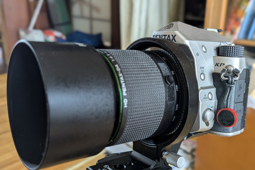

08 月 02 日 ( 金 )
SWFOTO LS-80 を購入しました
SWFOTO LS-80 なら HD PENTAX-DA 55-300mmF4.5-6.3ED PLM WR RE もつく
PENTAX KP 用に SWFOTO LS-80 を購入しました。SWFOTO LS-75 が PENTAX KP で使えるというレビューを Amazon で見たので LS-80 もいけるだろうと踏んでの購入です。
LS-75 ではなく LS-80 を選んだ理由は単純明快です。経の大きな LS-80 であれば、55-300PLM でも取り付けることができるのでは？と期待してのことです。結果ですが、問題なく取り付けることができました。
購入の経緯
どうして SWFOTO LS-80 を購入したのかというお話をします。
これまでカメラを三脚に取り付ける際に、L 字プレートというものをつかってきました。L 字プレートを使うと、カメラが横位置だろうと縦位置だろうと、カメラの重心が常に三脚のセンターポールの上にあり、三脚はもちろんのことカメラ自身も安定するという大きなメリットがありました。
三脚自体が安定するので、とんでもない強風であるとか、足場が悪すぎて重心とかに関係なく三脚が不安定であるような場合を除いて、カメラごと三脚が倒れてカメラが地面に叩きつけられてレンズごと壊れるというリスクが減少します。それがあるので、私は PENTAX KP 専用品ではなく (⇐ そもそもそんなものはこの世に存在しませんが) 汎用のユニバーサル製品でしたが L 字プレートを愛用していました。
カメラを取り付けた三脚を安定させるのにすぐれた L 字プレートですが大きな欠点があります。それは PENTAX KP の場合レリーズ用のケーブルスイッチが L 字プレートに干渉してしまうことと、横構図と縦構図を入れ替えるときに、必ず 1 度、カメラを三脚の雲台から取り外さなければならないということです。
後者は特に問題となります。自分のように、この 1 度カメラを雲台から取り外して、縦横の向きを変えて再度雲台に取り付ける、この行為が面倒だと思ったり、時間がかかりすぎて困ったりという人は少なくないはずです。時間がかかるということはシャッターチャンスを逃しやすいということでもあります。またこのときにカメラを落として壊してしまうというリスクもあります。
かといってよくあるように雲台のボールを 90 度傾けて縦構図にするという選択はあまり取りたくありません。カメラやレンズの重さにもよりますが、大抵は三脚が不安定になり、カメラごと倒れやすくなります。
上の動画のカメラマンさんの動画で、カメラを三脚上でくるくる回しているのをみて、これをフラッグシップ機や高価なレンズでなくても、カメラとレンズの安全のためにやりたいと思っていたこともあり、なんとかする方法はないかと考えていました。
そんなことを考えているうちに見つけたのが SWFOTO LS-75 でした。動画のようにはクルクルと回せず、回転させるのは若干抵抗があって粘りがあるのですが、安全に横構図と縦構図を入れ替えたいという私のニーズは十分満たしています。
SWFOTO LS-75 の問題は HD PENTAX-DA 20-40 mmF2.8-4ED Limited DC WR は取り付けることができるが、もう 1 本の利用頻度の高い HD PENTAX-DA 55-300mmF4.5-6.3ED PLM WR RE は太くて入らないと先ほどのレビューだけでなく別の Amazon のレビューにも書かれていたことです。
なので HD PENTAX-DA 55-300mmF4.5-6.3ED PLM WR RE を取り付けられないことはわかっている SWFOTO LS-75 には手が伸びず、もう少し径の大きな製品をさがしていました。そのようななか 3 日ほど前に Amazon で SWFOTO LS-80 が販売されていることに気が付きました。
レビューがほとんどついておらず、ましてや PENTAX の一眼レフで使えるという保証はありませんでした。ですが他に選択肢もなく、ドキドキしながら注文しました。
本当は昨日届く予定だったのですが、どうやら運送会社がオーバーフロー状態らしく、1 日遅れて今日の午前中にSWFOTO LS-80 がやってきました。
取り付けてみた
HD PENTAX-DA 55-300mmF4.5-6.3ED PLM WR RE を取り付けることができたのは先に述べたとおりです。クルクルとはいきませんが下の 2 枚の画像のように、カメラを雲台から外さなくても横構図と縦構図とを変えることができるようになりました。
リングの位置をうまく調整すればピントリングも操作できますし、ズームのロックボタンも操作できます。
明確な欠点は 2 つあります。1 つ目は思いのほか重いということ。三脚を使わないときは重いのでカメラから外しておきたいと思いました。2 つ目は最初だけの問題ですが組み立てがちょっと面倒で、組み立て順等にちょっとコツがあるってところでしょうか。それ以外に問題を感じませんでした。
このシリーズのレビューに回転が重いという指摘がありますが、たぶんこれは製造者が意図したものです。恐らくカメラが斜めでも安定して止まるように、そのように設計されていると自分は理解しました。
もう１つ見かけるレビューとして、三脚に取り付けてよく見てみると、カメラとレンズが微妙にお辞儀している、というものがあります。気になる人は気になるのでしょうが、自分は実用には影響ないと判断しています。
精度にこだわると恐らく価格がボンと跳ね上がると考えられるので、この価格で (筆者購入時で 7800 円) この精度でしかも実用上問題がまったくないなら、これで十分だと自分は考えます。
組み立て方
箱を開けるとパーツがバラっと入っています。
検品印らしきものも入っています。日本だと日付は手書きで、担当者の印鑑が押されていたりするものですが、これは全て印刷物です。とは言え、単に検品が終わったらこのカードを入れるという作業手順になっているに過ぎないのかもしれず、これだけでこの検品票が信頼できないと考えるのは早計でしょう。実際にパーツに問題がなく不足することもないので、きちんと検品されているようです。
最初にカメラを乗せる台座部分のパーツを選ぶ必要があります。短いものと長いものが同梱されています。おそらく短いほうがミラーレスカメラ用で長いほうが一眼レフ用だと思われます。PENTAX KP の場合は短い方ではリングがカメラボディーに近寄りすぎてしまい、取り付けることができませんでした。
PENTAX KP の場合はペンタプリズムと内蔵ストロボが格納されている軍艦部が人のおでこのように出っ張っています。
このおでこが LS-80 のリングと干渉してしまい、短い方の台座パーツではカメラに取り付けることができません。なので台座パーツは長い方を選び、最も後ろに近い場所にカメラを固定することになります。
最初にリングをずらして台座取付部をむき出し状態にします。これをしないと台座パーツの取り付けがかなり難しく、というよりもほぼ不可能になります。なのでずらします。
台座固定用のネジは軽く止まる程度に締めます。完全に固定するのは待ってください。あとで困ります。
台座パーツにはネジ止め用の穴が縦に 4 つづつ開いています。PENTAX KP の場合は 1 番下か、下から 2 番目の穴にネジ止めします。もしかすると 3 番目でも大丈夫かもしれませんが 4 番目、つまり一番上の穴は駄目です。PENTAX KP の場合は微調整が不可能になります。
カメラに取り付けた直後は下の画像のようにリングの中心にマウントが来ておらずずれています。これだとリングに干渉してレンズがつかないのと、仮についてもマウント中央とリング中央がずれてしまっているので、横構図のときと縦構図のときでセンサー位置がずれてしまいます。なので微調整が必要です。この微調整をするために、このネジを完全に止めてはいけないと書いたわけです。
おおよそリング中央にマウント部がくるように微調整します。
これでいいように見えます。でもこの段階ではまだネジを完全固定しないでください。これでレンズを入れるとリングにレンズが当たって、レンズに傷が入ることがあります。
なのでネジで完全固定する前に先にレンズをボディに取り付けます。そしてレンズのリア側がリングの中央にくるように微調整してから、台座パーツ用のネジを完全に締めます。
次にカメラへの取り付けの微調整です。下の画像のカメラ固定用ネジを完全に閉めるのもちょっと待ってください。

というのは下の画像をみればわかるように、何の気なしに LS-80 をカメラボディに取り付けるとレンズに対してリングが傾いた状態であることが多いです。
これを直してから LS-80 がずれないように気をつけてカメラへの取り付けネジをきっちりと締めましょう。
最後に取り付け例
最後に私の主力レンズたちの取り付け画像です。
HD PENTAX-DA 55-300mmF4.5-6.3ED PLM WR RE
HD PENTAX-DA 20-40 mmF2.8-4ED Limited DC WR
HD PENTAX-DA 35mmF2.8 Macro Limited

- Category :
- #日記
- #blog
- #写真
- #カメラ
- #三脚
- #三脚座
- #SWFOTO
- #LS-80